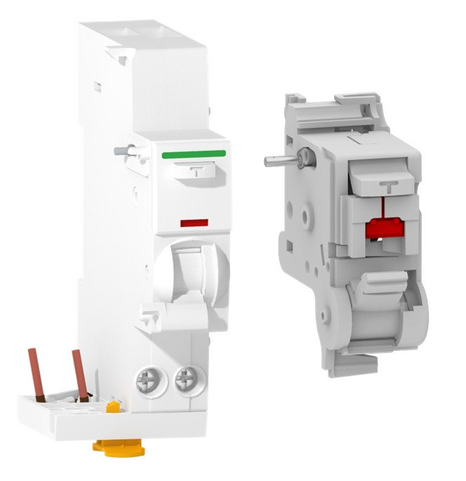
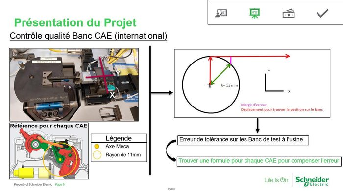
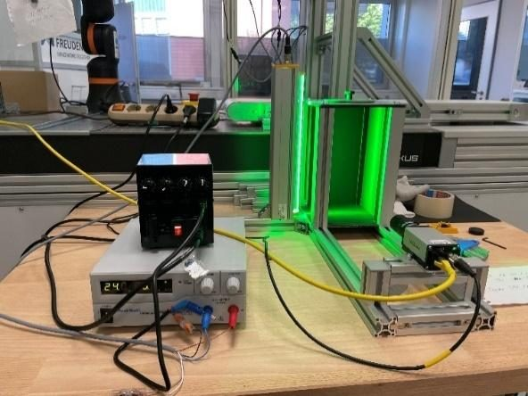
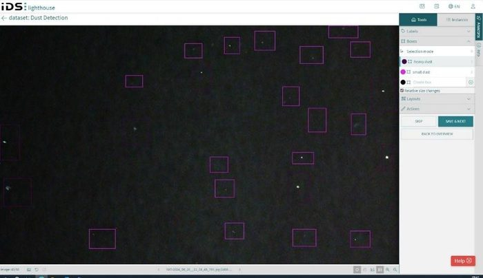
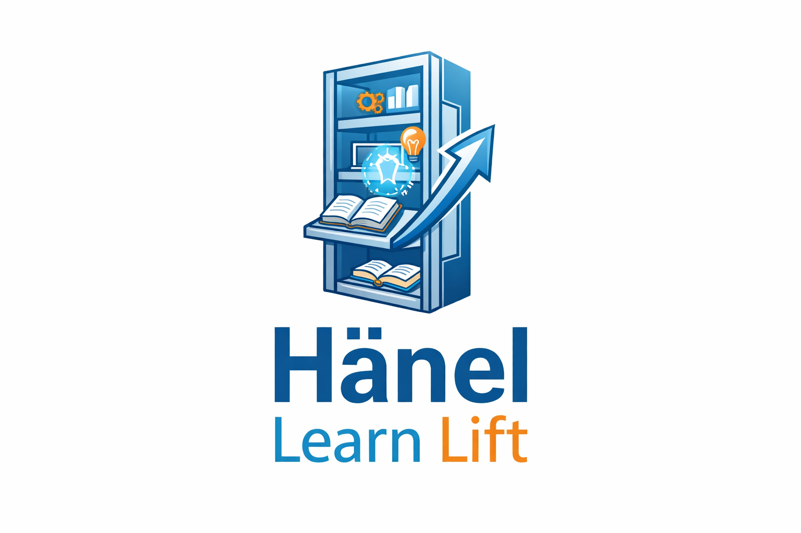
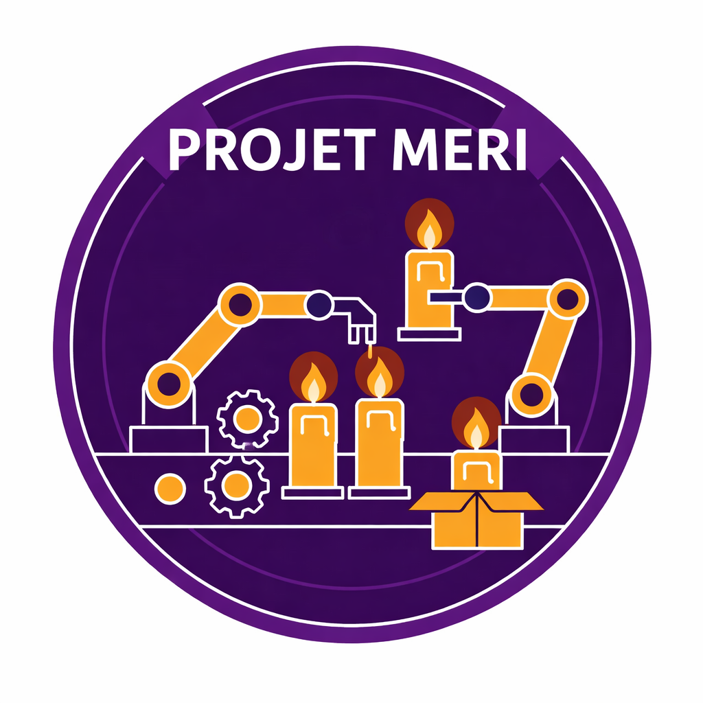
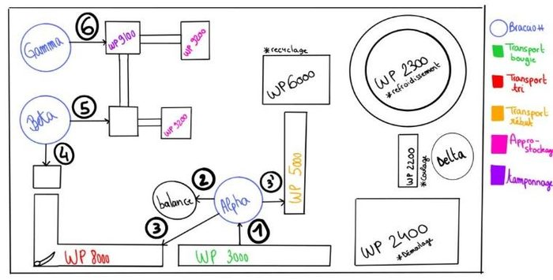
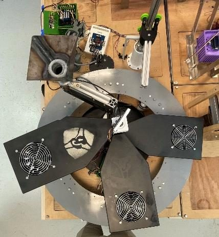
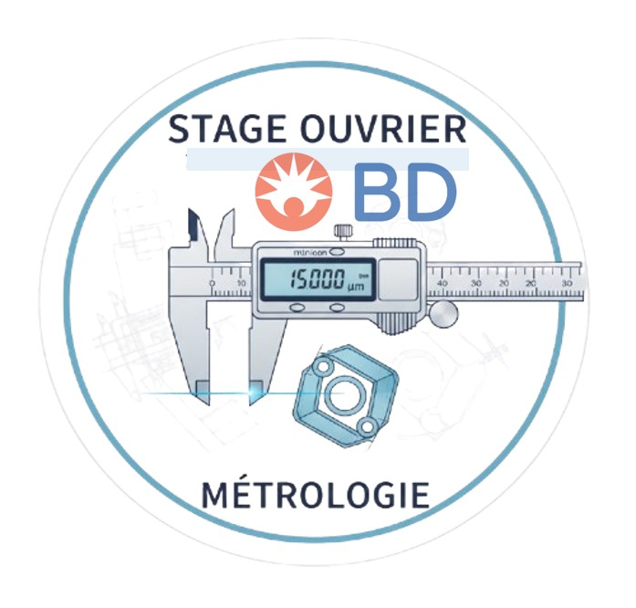
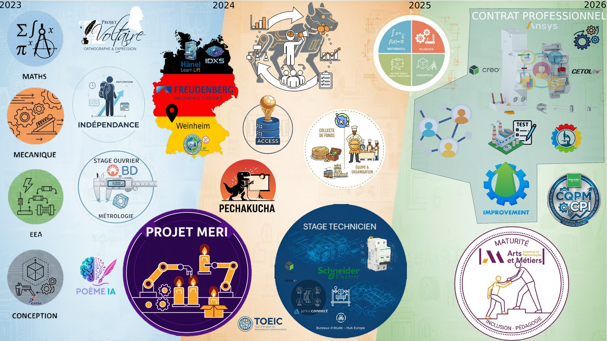

Étudiant ingénieur en conception mécanique, en contrat professionnel chez Schneider Electric. Passionné par l'innovation industrielle, la simulation et le développement de solutions techniques concrètes.
Cliquez sur une carte pour afficher le détail complet, puis accédez à la fiche PDF pour aller plus loin.

Contrat Pro 2025–2026 · 9 moisProposer des solutions mécaniques pour optimiser l'effort moteur du disjoncteur différentiel Vigi avant et après vieillissement. Simulation ANSYS Rigid Body, tomographie, caméra Keyence + IA.

Stage Technicien 2024–2025 · 3 moisDévelopper une méthode pour corriger les écarts de positionnement des bancs de test CAE pour les disjoncteurs MCB IC60. Résultat : économie de 30 000 € pour le bureau d'étude.

Stage Mobilité 2023–2024 · 2 moisPrototype de détection de poussière en temps réel pour salles blanches, via une caméra industrielle IDS-NXT et une intelligence artificielle entraînée sur mesure.


Stage Mobilité 2023–2024 · 4 sem.Paramétrer un système de stockage industriel, référencer tous les polymères et élastomères, créer les modes opératoires et former les utilisateurs.

Projet Académique 2023–2025 · 2 ansResponsable du WP de refroidissement (WP2300) sur une maquette évolutive représentative d'une industrie. Programmation Arduino, CAO/FAO, soudage.



Stage Exécutant 2023–2024 · 4 sem.Étalonnage d'instruments, vérification de matériel et contribution au projet eDHR sur un site produisant ~1M de seringues/jour.
Synthèse structurée des compétences développées à chaque étape de mon parcours.
| Activité | Savoir | Savoir-faire | Savoir-être | Exemple |
|---|---|---|---|---|
| Détection de Poussière FTI [1/4] |
Configuration de caméra IDS nxt · Traitement d'images | Intégration sur un système · Programmation IA | Curiosité · Esprit d'analyse · Précision · Résilience | Fabrication d'un système de simulation de salle blanche · Utilisation du logiciel IDS nxt |
| Installation Hänel FTI [2/4] |
Configuration de l'ascenseur · Adaptation aux nouvelles pratiques | Gestion des stocks logistiques · Synthétiser · Trouver des alternatives | Précision · Rigueur · Sens du service · Écoute | Configuration du logiciel · Mise en place de MOP et réunions d'explication |
| Maker Space FTI FTI [3/4] |
Besoins technologiques · Gestion de projet | Aménagement d'espaces · Maintenance équipements (Stratasys J55, Ultimaker 4S) | Collaboration · Innovation · Curiosité | Installation imprimante Stratasys J55 · Estimation prix de location et budget |
| R&D Hydrogène & Piles à combustible FTI [4/4] |
Matériaux thermofusibles · Alternatives aux PFAS · Procédés de transformation | Vérification des propriétés · Suivi fabrication d'échantillons | Collaboration · Adaptation aux exigences client | Tests plastiques avec alternatives de forces/températures · Envoi de plaques 0.2mm pour 5 plastiques distincts |
| Activité | Savoir | Savoir-faire | Savoir-être | Exemple |
|---|---|---|---|---|
| Projet MERI Chaîne de production de bougies |
Gestion d'équipe · CAO/FAO Catia V5 · Câblage Arduino | Communication · Gestion des conflits · Planification · Prototypage · Modélisation 3D · Programmation C++ · Soudage | Prise de décision · Organisation · Esprit d'équipe · Persévérance · Créativité · Adaptabilité | Mise en place de compte rendu et Gantt · Conception d'un système de refroidissement · Synchronisation de plusieurs cartes Arduino |
| Stage Métrologie Becton Dickinson |
Étalonnage d'instrument · Gestion des équipements de mesure | Analyse des données de mesure · Documentation et traçabilité | Attention aux détails · Esprit d'analyse · Communication · Respect des normes | Suivi de protocole d'étalonnage · Création de MOP · Utilisation de Blue Mountain |
| Cadets de la gendarmerie Mission d'Intérêt Général |
Règles de civisme · Missions de la gendarmerie · Sécurité publique | Application consignes de sécurité · Communication efficace · Mission de prévention | Sens du devoir · Respect de l'autorité · Esprit d'équipe · Solidarité | Parcours du combattant à Dijon · Prévention de vol à la roulotte dans une station de ski |
| Activité | Savoir | Savoir-faire | Savoir-être | Exemple |
|---|---|---|---|---|
| Stage technicien Optimisation bancs CAE |
Normes GPS · Chaînes de côtes · Principes de métrologie | Utilisation de Creo et CETOL · Maîtrise d'analyse statistique (Excel, CETOL) | Rigueur · Esprit d'analyse · Résolution de problèmes · Curiosité · Précision | Fonctions correctives pour compenser les erreurs de positionnement · Application de formules améliorant la précision des mesures |
| Contrat Pro Effort moteur Vigi |
Mécanismes de déclenchement des disjoncteurs · Fiabilité produit | Simulation ANSYS Rigid Body · CAO Creo · Analyse de données expérimentales et exploitation statistique | Rigueur dans l'analyse · Curiosité technique · Esprit d'initiative (caméra Keyence + IA) | Modèle de simulation ANSYS pour identifier les pertes d'énergie · Étude de faisabilité mesure d'énergie cinétique via caméra |
| Contrat Pro (projet parallèle) Logiciel LabEC |
Protocoles d'acquisition NI-DAQmx · Capteurs effort/course · Besoins utilisateurs en environnement industriel | Application Python complète (Tkinter, Matplotlib, OpenPyXL) · Intégration matériel/logiciel · Traitement temps réel des signaux | Esprit d'initiative · Autonomie dans la gestion d'un projet logiciel de A à Z | Remplacement d'un système obsolète (Windows XP + clé USB) par un logiciel moderne · Export automatique vers Excel avec statistiques et graphiques |
Support visuel narratif de mon parcours de 2023 à 2026 — chaque image est un repère intentionnel représentant un projet, une compétence ou une étape clé. Cliquez pour agrandir.

🔍 Cliquer pour agrandirAcquisition des bases académiques (mathématiques, mécanique, EEA, conception), première immersion industrielle chez Becton Dickinson, lancement du projet MERI, créativité avec le Poème IA, et mobilité internationale chez Freudenberg en Allemagne.
Management d'équipe avec le robot quadrupède, projet Access, développement de l'aisance orale via le Pechakucha, organisation du voyage d'étude à Lisbonne, stage technicien chez Schneider Electric et obtention du TOEIC.
Contrat professionnel chez Schneider Electric (optimisation Vigi, ANSYS, Creo, CETOL), préparation du CQPM Chargé de projets industriels, et mission de tutorat auprès d'un étudiant en situation de handicap — maturité humaine et professionnelle.
Arsène s'est rapidement distingué par son sérieux, sa rigueur et sa capacité d'apprentissage. Il possède toutes les qualités d'un futur ingénieur : compétence, curiosité, implication, sens du collectif.
Mr. Kuhlich was an exceptional intern in every respect. His excellent ability to familiarise himself rapidly must be mentioned in particular. His way of working was consistently excellent.
Il est certainement l'élève qui a le plus progressé. Empathique, soucieux des autres, il a joué un rôle important et fédérateur dans sa promotion. Il est devenu une personne ressource.
Recherche une formation d'ingénieur en alternance mécanique / mécatronique soutenue par Schneider Electric — Sept. 2026 à sept. 2029